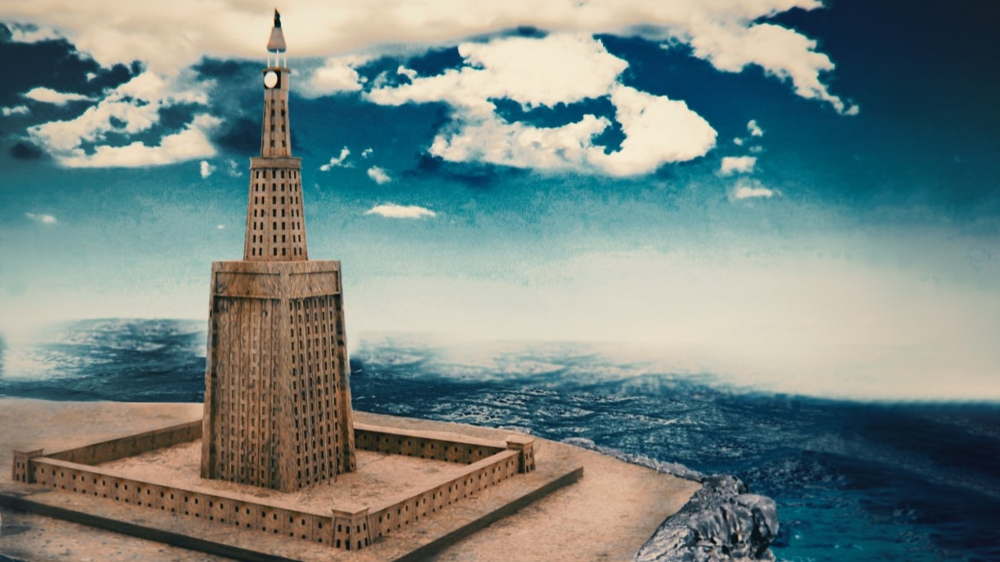
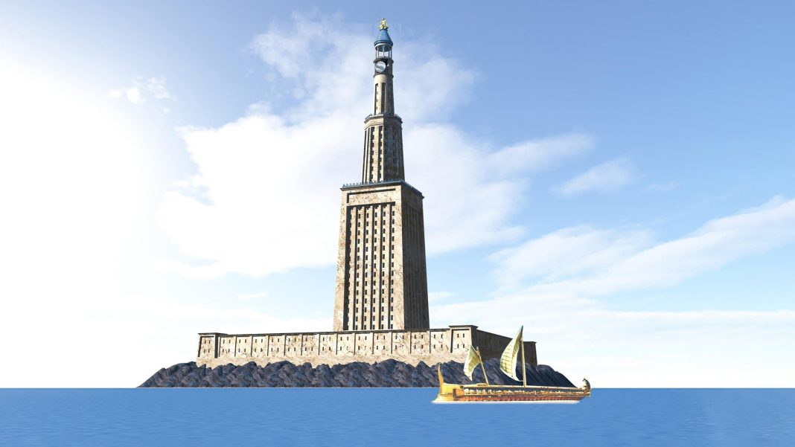

Le phare d’Alexandrie était l’une des sept merveilles du monde antique. C’était une tour qui servait à guider les bateaux et à montrer la richesse de la ville d’Alexandrie, en Égypte. Il a été construit au troisième siècle avant J.-C. par Sostrate de Cnide, un architecte renommé de l’Antiquité. Il a été détruit par des tremblements de terre plus de mille ans plus tard. Son héritage continue à inspirer les phares modernes et à témoigner de l’ingéniosité humaine.
Le phare d’Alexandrie a été commandé par Ptolémée Ier, le successeur d’Alexandre le Grand en Égypte. Ptolémée Ier voulait que sa capitale, Alexandrie, ait une structure qui aiderait les marins et les commerçants qui voyageaient en mer la nuit. Le phare devait aussi refléter la grandeur et la richesse de la ville, qui était l’un des plus grands centres commerciaux de la Méditerranée.
Le phare a été construit sur une île grecque appelée Pharos, située à environ un kilomètre d’Alexandrie. C’est de cette île que vient le nom actuel du phare. Le phare d’Alexandrie est le premier édifice de ce genre dans l’histoire. Les travaux ont été réalisés par Sostrate de Cnide, qui a signé son nom sur une plaque à la base du phare.
Le phare avait trois niveaux : une base rectangulaire, un milieu octogonal et un sommet cylindrique. La hauteur totale du phare était estimée entre 100 et 140 mètres, ce qui en faisait l’un des plus hauts bâtiments de l’époque. Au sommet du phare, il y avait un miroir qui reflétait la lumière du soleil pendant la journée et un feu qui éclairait le port pendant la nuit. La lumière du phare était visible à des kilomètres à la ronde.
Le phare d’Alexandrie n’était pas seulement un bâtiment imposant, mais aussi un réseau complexe de rampes intérieures qui permettaient d’acheminer le combustible jusqu’au sommet. Le phare était alimenté par du bois ou du charbon, qui étaient transportés par des animaux ou des hommes. Le feu était entretenu par des gardiens qui veillaient à ce qu’il ne s’éteigne pas.
Le phare était construit avec des dalles de pierre claire, qui étaient assemblées avec du plomb fondu. Ces matériaux ont été judicieusement choisis pour résister à des siècles de tremblements de terre et de tempêtes maritimes. Le phare était également décoré avec des statues et des inscriptions qui glorifiaient Ptolémée Ier et les dieux.
Le phare d’Alexandrie était un chef-d’œuvre de l’architecture hellénistique, qui combinait les influences grecques, égyptiennes et orientales. Il était considéré comme l’une des sept merveilles du monde antique, aux côtés des pyramides de Gizeh ou du colosse de Rhodes. Il était représenté sur des pièces de monnaie, des statues et des œuvres littéraires, qui témoignaient de sa grandeur imposante et de son importance.
Le phare d’Alexandrie a duré plus d’un millénaire, mais il a été progressivement endommagé par des tremblements de terre qui ont également provoqué des tsunamis entre les années 956 et 1323 après J.-C. Le phare a commencé à se détériorer et a finalement été abandonné lorsqu’une partie de la tour s’est totalement écroulée.
Les blocs du phare sont restés sur l’île jusqu’en 1480, date à laquelle le sultan égyptien Qaitbay a ordonné d’utiliser les blocs pour la construction d’un château. Ce château, qui existe encore aujourd’hui, conserve quelques vestiges du phare, comme des colonnes ou des sphinx. Des fouilles archéologiques ont également permis de retrouver des fragments du phare dans les eaux autour de l’île.
Bien que le bâtiment soit détruit, son héritage continue à être visible. Le phare d’Alexandrie est toujours considéré comme un monument du progrès humain et un symbole de l’ingéniosité humaine. Il rappelle l’éclat de notre histoire commune, et pas seulement pour les anciens marins. La construction des phares modernes continue d’être influencée par le phare d’Alexandrie. L’idée de base d’une tour projetant de la lumière pour diriger les navires n’a pas changé. Ce tournant dans l’histoire de l’humanité ouvre la voie aux générations futures et constitue un monument à la sagesse et au talent des anciens.